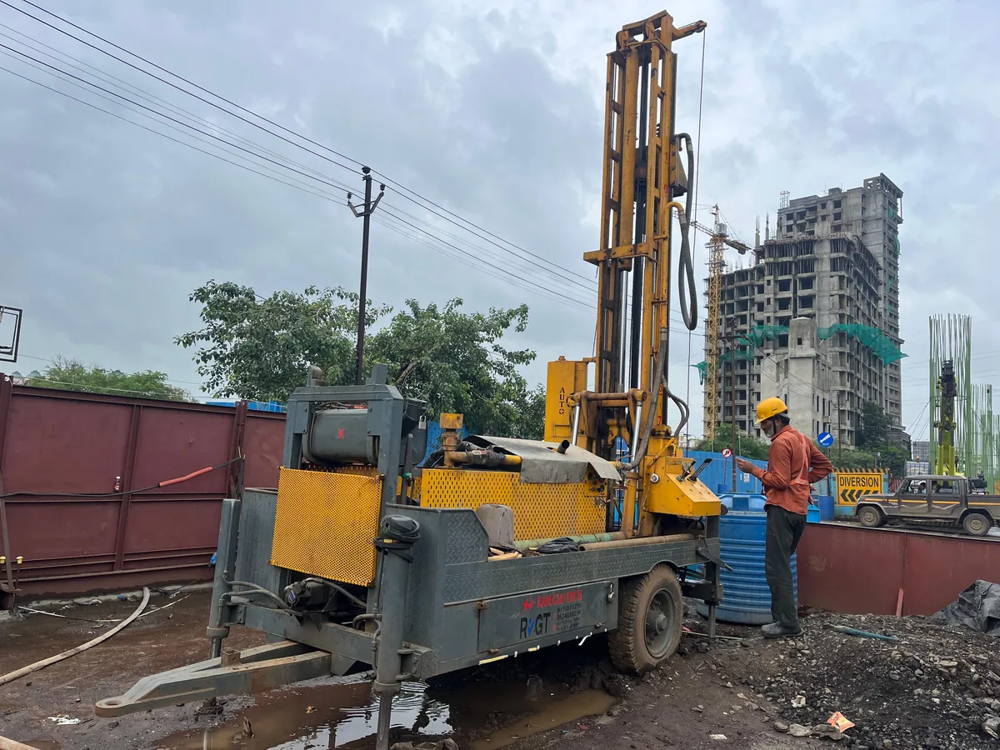

Engineering Expertise. Clearly Defined.
Explore our engineering services and technical capabilities. Select a service to view its detailed parameters and activities.
In the ground Investigation and survey
-

Geotechnical Investigation 26 parameters Subsurface investigation, field testing, soil and rock evaluation, and geotechnical engineering and design. -
 Geophysical & Specialized Investigation
22 parameters
Geophysical surveys, subsurface characterisation, surveying and hydrogeological investigations.
Geophysical & Specialized Investigation
22 parameters
Geophysical surveys, subsurface characterisation, surveying and hydrogeological investigations.
Under test Materials, foundations and infrastructure
-
 Laboratory, Materials Testing & NDT
61 parameters
Testing and evaluation of soil, rock and construction materials, and non-destructive testing and condition assessment of concrete, structures and existing infrastructure.
Laboratory, Materials Testing & NDT
61 parameters
Testing and evaluation of soil, rock and construction materials, and non-destructive testing and condition assessment of concrete, structures and existing infrastructure.
-
 Foundation & Pile Testing
16 parameters
Load testing and integrity assessment of foundations and piles.
Foundation & Pile Testing
16 parameters
Load testing and integrity assessment of foundations and piles.
-
 Pavement & Infrastructure Investigation
26 parameters
Pavement and infrastructure investigation, condition assessment and specialised testing for highways, roads, bridges and tunnels.
Pavement & Infrastructure Investigation
26 parameters
Pavement and infrastructure investigation, condition assessment and specialised testing for highways, roads, bridges and tunnels.
On the drawing board Design, modelling and advice
-
 Engineering Design & Analysis
15 parameters
Engineering calculations, design development, analysis and technical review.
Engineering Design & Analysis
15 parameters
Engineering calculations, design development, analysis and technical review.
-
 BIM & Digital Engineering
18 parameters
Digital modelling, design coordination and integrated engineering workflows.
BIM & Digital Engineering
18 parameters
Digital modelling, design coordination and integrated engineering workflows.
-
 Advisory & Due Diligence
15 parameters
Objective technical review, engineering risk assessment and project evaluation support.
Advisory & Due Diligence
15 parameters
Objective technical review, engineering risk assessment and project evaluation support.
Most projects need more than one service.
A typical starting scope by project type. Every project is scoped on its own drawings and site, so treat this as a guide, not a package.
| Geotechnical | Geophysical | Lab & NDT | Pile testing | Pavement | Design | BIM | Advisory | |
|---|---|---|---|---|---|---|---|---|
| Buildings & real estateHousing, offices, hospitals, campuses | Usually part of the scope | Often added | Usually part of the scope | Often added | Rarely needed | Usually part of the scope | Often added | Rarely needed |
| Roads & highwaysNew alignments, widening, pavements | Usually part of the scope | Often added | Usually part of the scope | Rarely needed | Usually part of the scope | Usually part of the scope | Rarely needed | Often added |
| Bridges & flyoversRiver and road crossings, ramps | Usually part of the scope | Often added | Usually part of the scope | Usually part of the scope | Usually part of the scope | Usually part of the scope | Often added | Often added |
| Rail & metroViaducts, tunnels, stations, depots | Usually part of the scope | Usually part of the scope | Usually part of the scope | Usually part of the scope | Often added | Usually part of the scope | Usually part of the scope | Often added |
| Water & damsDams, canals, reservoirs, treatment plants | Usually part of the scope | Usually part of the scope | Usually part of the scope | Rarely needed | Rarely needed | Often added | Rarely needed | Often added |
| Industrial & warehousingPlants, sheds, heavy floor slabs | Usually part of the scope | Often added | Usually part of the scope | Often added | Rarely needed | Usually part of the scope | Often added | Often added |
| Solar & energySolar parks, substations, earthing | Usually part of the scope | Usually part of the scope | Usually part of the scope | Usually part of the scope | Rarely needed | Often added | Rarely needed | Often added |
| Existing structuresDistress, retrofit, change of use | Often added | Often added | Usually part of the scope | Rarely needed | Often added | Usually part of the scope | Often added | Usually part of the scope |
| Land & acquisitionsSite purchase, investment decisions | Often added | Often added | Rarely needed | Rarely needed | Rarely needed | Rarely needed | Rarely needed | Usually part of the scope |
- Usually part of the scope
- Often added
- Rarely needed
Not sure which service you need?
Describe your site and structure. We will tell you what the work requires, and what it does not.